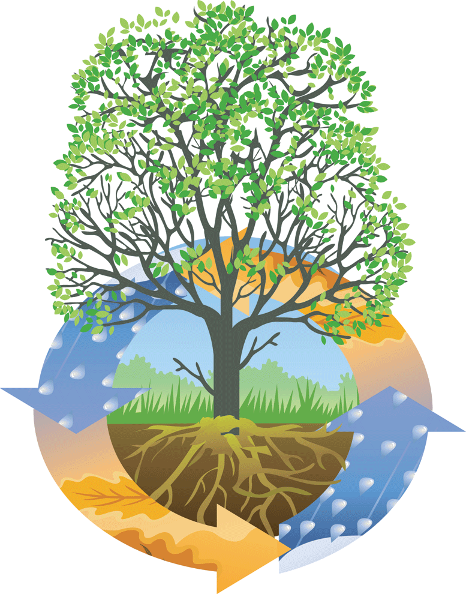
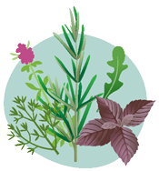
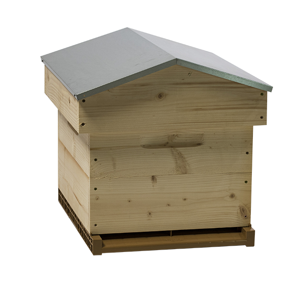
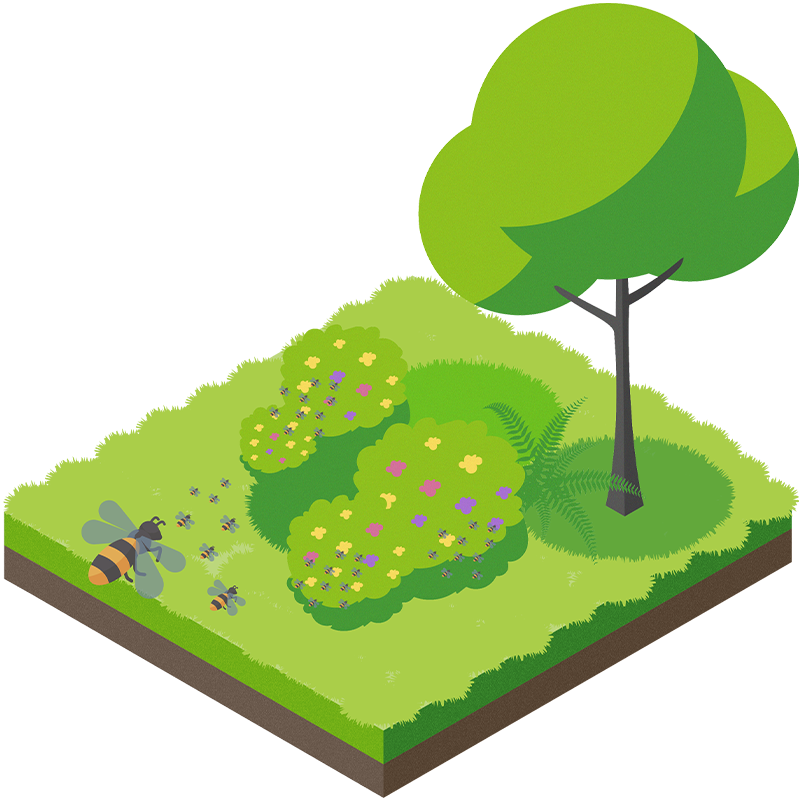
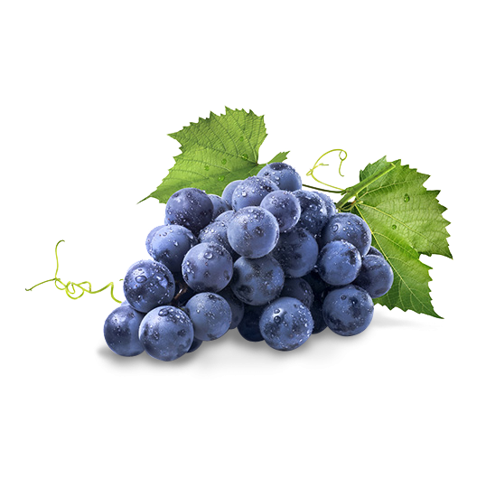

Verger pédagogique du lycée René Cassin
|  | Au lycée René Cassin À Mâcon, le verger pédagogique n'as pas comme but seul la culture. Ce jardin est structuré de maniere a etre en permaculture. Ce que cela veut dire c'est qu'il nécessite le moins d'entretien possible : la nature s'en occupe elle-même. La diversité des plantes cultivés attirent insectes et maintiennent la terre riche. Le jardinier décide de ce qu'il va planter, et c'est seulement ce choix qui va influencer le jardin de son côté, ce dernier se maintient tout seul, dans son écosystème improvisé. |
|  | A partir de matériaux simples tels que des pierres et du sable, les élèves ont réalisé une spirale à herbes aromatiques. A but plus décoratif que culinaire, la spirale est un moyen efficace d'avoir une variété de plantes dans un espace réduit. Toutes ces espèces, de par leurres différences et adaptations à leur milieu spécifique, sont très utiles en cohabitation dans le cadre de la permaculture (jardin autonome de par son écosystème). |

|
Au sein du projet du verger pédagogique du lycée, les élèves de BAC PRO OBM métallerie se sont lancés dans la conception et réalisation d’un arbre solaire. Cet arbre de métal, arbore non pas des feuilles mais des panneaux solaires qui s’étendent 4 mètres au-dessus du sol afin de capter des rayons de soleil. Son tronc est doté de ports usb afin de permettre aux élèves de recharger leurs portables et divers appareils électroniques. |
|  | Les élèves ont, en collaboration avec des apiculteurs locaux, participé au processus de l'entretien des ruches, de l'élevage d’abeilles et la production de miel. Ce miel est d'abord ramené sous forme de nectar à la ruche, ou il est transformé par le processus de trophallaxie avant d'être laissé sécher dans des alvéoles. Cette production a permis aux élèves de passer par la case d’apiculteur par la case du verger pédagogique, en découvrant les nombreuses facettes de la production du miel. |
|  | Dans le thème précédemment abordé de la production de miel, un autre projet du verger pédagogique est la haie mellifère. Afin de fournir aux abeilles du nectar (dont la quantité dépend des espèces de plantes) et dense, par conséquent, la pollinisation du verger, les élèves ont étudié et plante une haie mellifère. Celle-ci, en dehors de la production de fruits, de légumineuses et l'hébergement des petits oiseaux et mammifères composant son écosystème, a pour but de contenir nombre de plantes propices au butinage par les abeilles. Celles-ci ont été choisies minutieusement par les élèves qui ont aussi organisé la production de la haie. |
|  | Des vignes ont aussi été cultivées dans l'enceinte du verger pédagogique. Celles-ci vont permettre aux élèves d'étudier le sol, la culture du raisin de table, le processus de commercialisation, et l’organisation de dégustations de leur récolte. |
|
|
©Copyright V-G Tom et Todea Radu
Lycée René Cassin Mâcon |